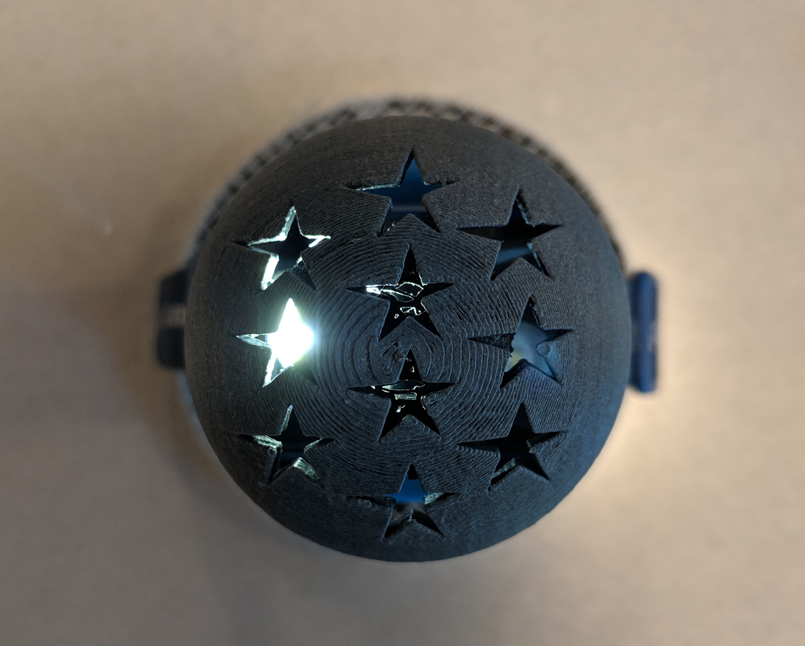
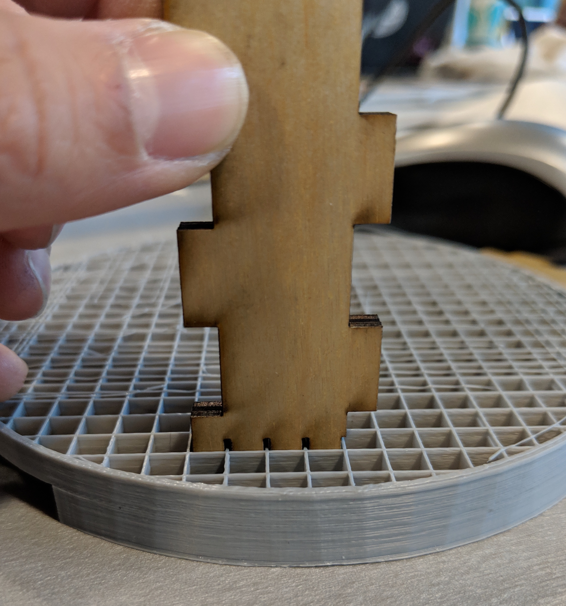

Cindy Feng's Assignment 3
This assignment was completed in the MILL on 04/25 through 04/29/2019.

Files used:
- Rhino Lamp Base 3dm
- Rhino Lamp Cap 3dm
- Adobe Illustrator Lasercut ai file for lamp stand
- stl for lamp base print
- stl for lamp pedestal only print
- stl for lamp cap print
3D Printing Attempts
I have a head lamp that I use for backpacking and hiking that I wanted to use in a lamp. The brand is Black Diamond and I used my caliper to take some measurements and then I sketched what I wanted to 3D print.
I use CATIA daily at work, and 3D modeling basics are generally transferable between CAD software, so I quickly drew up my first iteration of what I wanted to print. The general idea is that I wanted the head lamp to sit on top of a pedestal, with the band going around the base of the lamp. I had not yet started thinking of the lampshade portion.

I wanted to design a spiral pattern into the sides of the cone, but my limited knowledge of Rhino prevented me from etching into the surface. Here is an image of my attempt. I took the model without the spiral into the Simplify3D software on the MILL's laptops, but I was having issues where my mesh had holes. I learned to use "Export Selected" instead of "Export," so none of my construction geometry got exported as well.
This is the exported STL loaded into the Dremel software, but once I saw that the print would take 11 hours, I knew it was too thick and then went back to Rhino to shave off material. My inspiration was the 3D printed filament spool holders in the MILL.
When I loaded this into Dremel, it said that it would take 9 hours to print, so I was ok with coming back the next day, but I did run into issues. Shoutout to Jojo in the MILL for helping me with the 3D printer!
I got an E-mail 2 hours later that said my print failed. I left the Capitol Hill brewery that I was at at 9:30PM to go to the MILL and collect the 3D print below.
There was a bottleneck at the MILL that night, so good thing Josh bought 4 more filament spools! I loaded my print back into the printer, but when I called the next day the print had failed again. The MILL staff actually threw away the print so I had nothing to salvage when I arrived at the MILL two days later.
I had learned my lesson that smaller, shorter prints were more ideal so that I could be present when it failed in order to salvage what was left. I also learned that the nozzle had to be at 230 degrees C for PLA filament, and not the default 220 degrees on the printer.

Machine Settings:
- Nozzle Temperature: 130 degrees C
- Platform Temperature: 35 degrees C
- Print Speed: 100%
- Brim
- 10% infill
Lasercutting on the Fly
The resulting print was a pedestal, which took 45 minutes so I was able to stay near the printer and monitor the progress the entire time. I then decided to salvage the failed print from the base, and lasercut a plywood stand to fit into the 3D printed grid. The plywood I found as a scrap piece at the MILL.
Epilog Lasercutter Machine Settings:
- Power: 100%
- Speed: 10%
My first try, I didn't quite get the dimensions right. I thought that the width of the laser cutting into the plywood would be the same as the thickness of the 3D printed layer, but it wasn't.
My second try I actually used my calipers and measured the width, depth, and thickness of each grid in the 3D printed grid. The results were pretty satisfying because they fit!

Here is the assembly before the lamp shade! I had to return to the MILL twice due to the lasercutters in use by another students (rastering takes forever!) and I eventually gave up on trying to lasercut a lamp shade because the lasercutter was always taken. I decided to design and 3D print a lamp shade that reminded me of dragon balls!
3D printing the lamp shade
Here is the 3D printed lamp shade! I cut stars into it thinking that the stars would project onto the ceiling, but I learned that the cutouts have to be much closer to the light source (and the projection surface has to be much closer to the lamp as well).

Final Assembly
The switch to turn on the headlamp is accessible! Does not fall apart with a moderate shaking due to friction!
Acknowledgements: the staff at the MILL for helping me get set up with the 3D printers, Leo for letting me use his USB drives, and all the classmates that I bonded with over 4 days at the MILL!